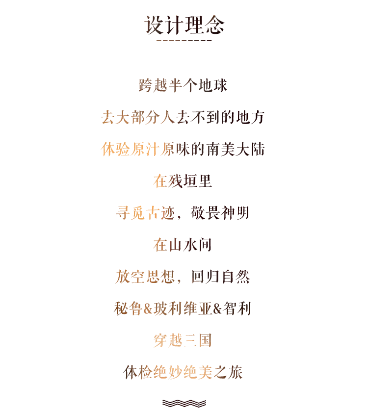
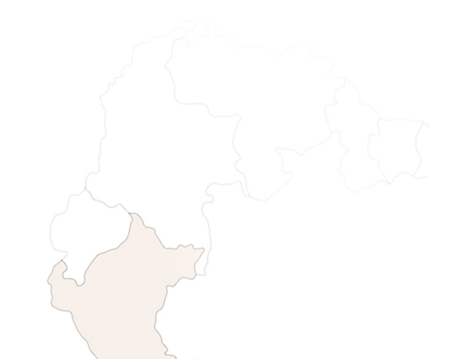
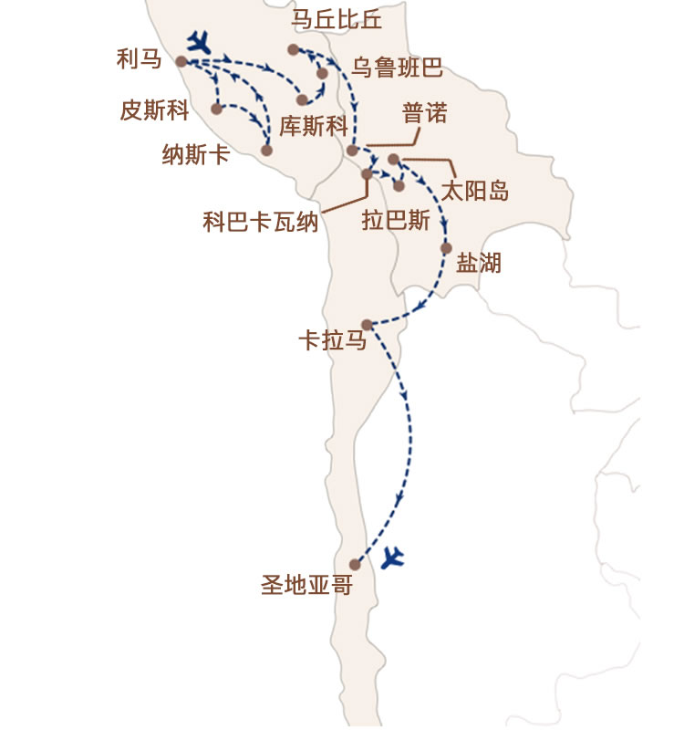
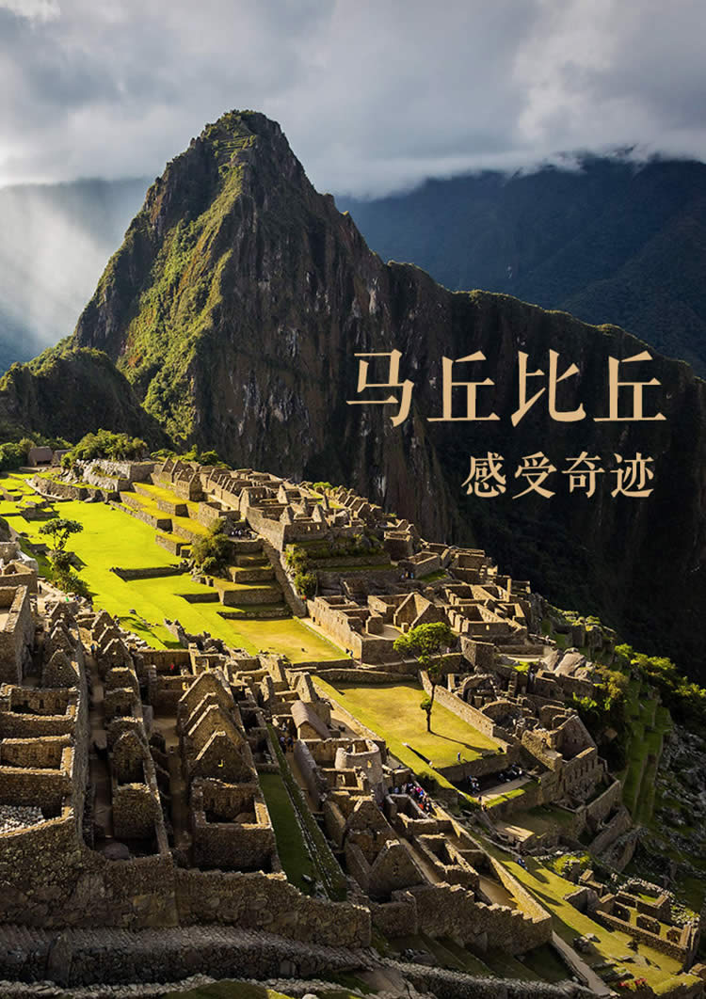
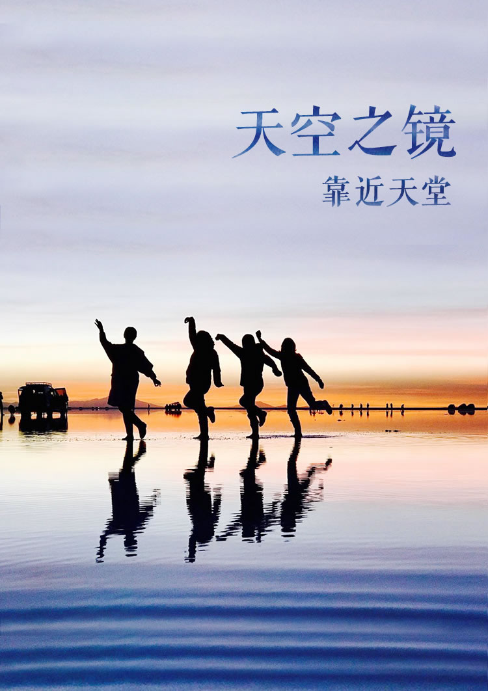
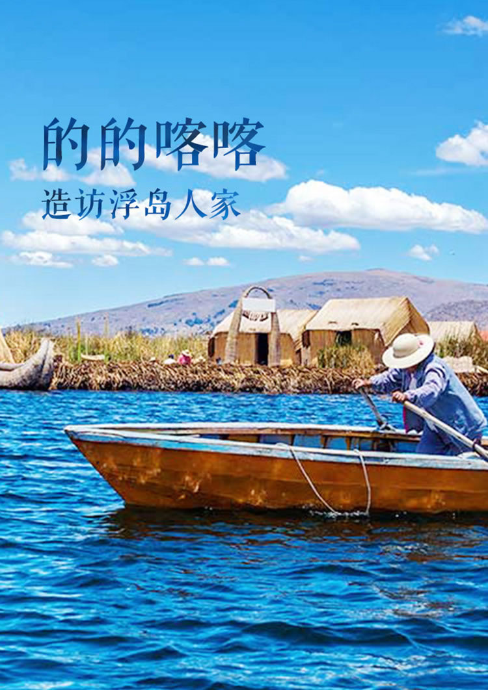
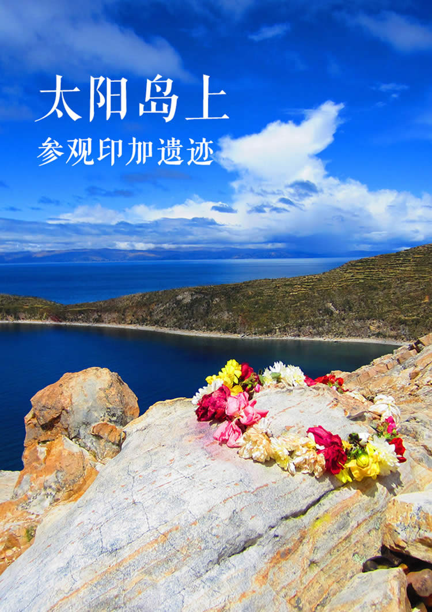
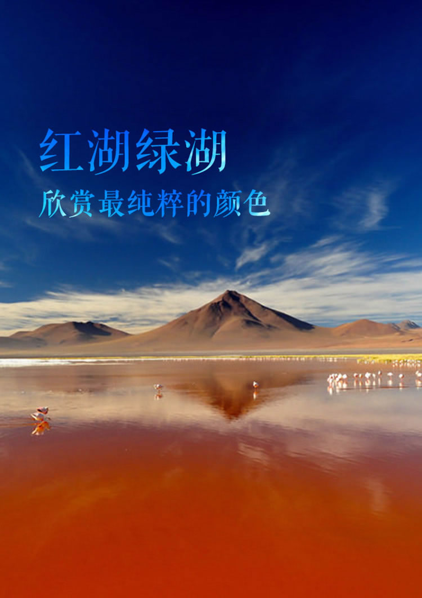
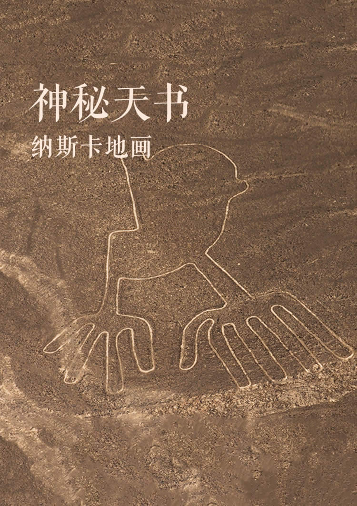
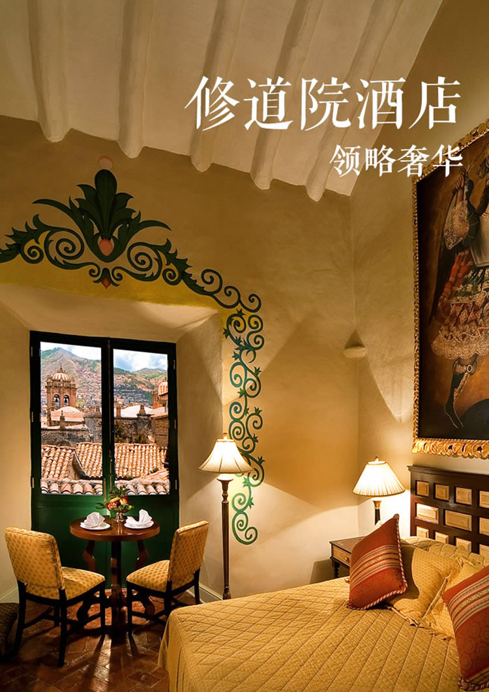

隐藏在秘鲁深山密林中的奇迹马丘比丘，号称是失落的天空之城。整个城市都是印加人民为了他们的信仰太阳神而建。登上马丘比丘，我们特别为您安排了专业的考古专家，当您的私人向导，带您参观并讲解这座遗迹曾有过的辉煌。傍晚，您将搭乘Belmond Hiram Bingham奢华火车，透过全景复古的车窗欣赏乌鲁班巴河谷的美景，并品尝顶级美食与红酒。

去往近年声名鹊起的乌尤尼盐湖，您可以在盐湖上观落日余晖，体验难以言表的壮观与美丽；夜晚，还可以来观星，在缀满数不清的星星的蓝紫色夜空下喝红酒，夜游盐湖，架起您的相机留下难忘的浩瀚星空，然后入住纯盐做的奇特酒店，酒店内不但四周的墙壁，就连屋顶、床铺、桌椅和各种雕像都是盐做的哦。清晨，根据情况可以再去欣赏盐湖日出。午餐就安排在干的盐湖区，吃一顿户外野餐，在诺大的盐湖上，在工作人员现场搭建的帐篷下，享受当地美食，制造一生一次的难忘经历。
有人形容阿塔卡玛沙漠美得“一塌糊涂”，在这里，你不需要有任何设备就能感受奇迹：覆盖着皑皑白雪的火山，晶莹剔透的各式咸水湖和温泉湖，鲜红艳丽的岩石峡谷，炽热的天然间歇泉，这里一应俱全。夜晚，这里又化身全球最佳观星地，星空就像无穷无尽的万花筒一样，绵延不绝地在你的面前延展开来，美得让人窒息。

乘船前往世界上海拔最高的淡水湖的的喀喀湖，碧波荡漾，浅处还能看到小鱼游来游去，我们将带您登上乌罗斯和塔奎利岛，当地人会穿华丽的民族服饰迎接大家。千百年来，岛上的居民就生活在芦苇编制的小岛上，在整个的的喀喀湖上，像这样芦苇编制的大大小小的岛屿还有上百个。我们将亲自看到浮岛编制的过程，体会当地居民古老的生活方式。


太阳岛是的的喀喀湖上最大的岛屿，因岛上的太阳神庙得名。从科巴卡瓦纳码头上船前往太阳岛，岛上有超过八十个古迹遗址，大部份都建于十五世纪的印加时期。欣赏印加古迹，搭乘当地人用香蒲草捆扎做成的“淘淘拉”船或快艇出海，戏水看云，回望太阳岛似一位久居乡村质朴简单的少女，大美毫无半点的雕琢，就那样赤裸裸地绽放着，毫不扭捏，也不掩藏自己的不谙世事。

玻利维亚的“死亡之路”，被称为世界上最危险的公路，沿途有十字架的地方，都代表曾有车辆从那落下深谷。你可以来此观光，如果技术够好，也可以骑行，除了一小段上坡路，骑手能够以连续64公里不间断的方式下坡。山势陡峭，路况不明，脚边就是万丈深渊，想想是不是很刺激？


经历过天空之境的震撼，能够再次颠覆你感官的也就红湖和绿湖了。我们安排了驱车驰骋在世界上最高最干燥的西罗里沙漠上，追寻南游多彩的安第斯湖泊——红湖，红色的湖面因藻类和矿物质而成，在这里还可以看到无比多的，长相优雅的粉红色火烈鸟及小羊驼等。至于绿湖，在远处的Licancabur火山的衬托下，晶莹剔透得如同地球上净度最高的绿宝石，让人舍不得移开眼睛。这一路上，经过的每一步，都是您摄影取景的绝佳地。

纳斯卡地画是一片绵延数公里的线条构成的各种生动的图案，镶刻在秘鲁大地之上。乘坐小型飞机在空中观赏这些地画，映入眼帘的是历经数千年、错落在沙漠地上、风吹不散的神秘几何动物图案，令人赞叹不已，至今无人知晓，是谁创造了它们并且为什么而创造，因此被列入世界十大迷团。



被评为世界文化遗产的豪华且历史悠久的Orient-Express旗下酒店，前身是有着四百多年历史的教堂，有无与伦比的服务和无可挑剔的房间，每个房间都能看见城市迷人的风景。酒店周围有各种遗址、神庙、教堂和府邸让这里成为了难忘的旅行地，您可以沿着鹅卵石铺成的小路领略它富足和美丽的过去。
DAY7
马丘比丘

马丘比丘
库斯科
• 马丘比丘，是保存完好的前哥伦布时期的印加遗迹，是南美洲最重要的考古发掘中心，也是世界新七大奇迹之一。
• 前往马丘比丘景点门口，爬最高峰拍日出，自由探索印加文化古城。与羊驼合影，也可以在山顶上看阳光洒满山谷……
参考报价
9.6万/人该价格为6人定制参考价格
最终价格以实际出行人数为准
价格包含
价格不含
国内往返南美的机票、护照、游览中另行付费的项目、用餐、私人消费及费用包含中未提及的一切费用